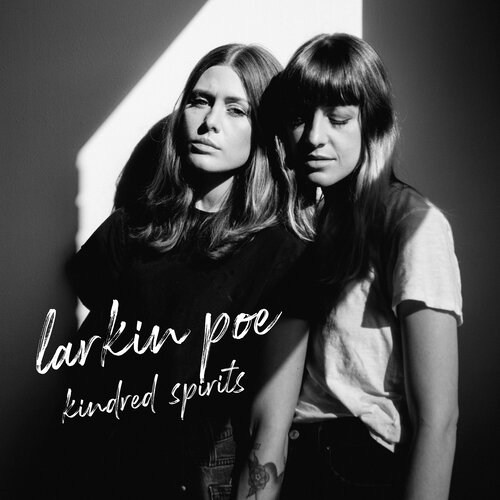
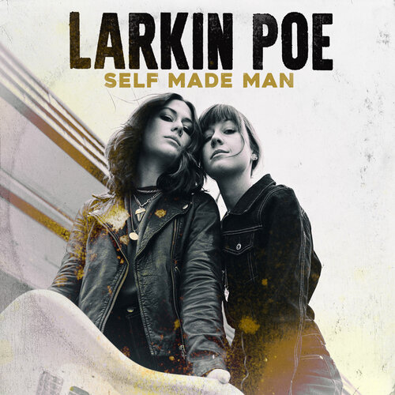
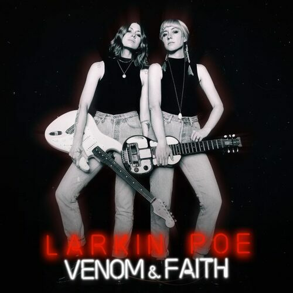
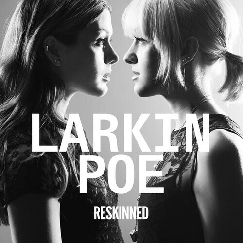

Kindred Spirits
Relese Year: 2020
- Hellhound On My Trail
- Fly Away
- Rockin' In The Free World
- (You're The) Devil In Disquise
- In The Air Tonight
- Nights In White Satin
- Who Do You Love
- Take What You Want
- Ramblin' Man
- Bell Botton Blues
- Crocodile Rocks

She's A Self Made Man
Relese Year: 2020
- She's A Self Made Man
- Holy Ghost Fire
- Keep Diggin'
- Back Down South
- Tears Of Blue To Gold
- God Moves On The Water
- Every Bird That Flies
- Scorpion
- Danger Angel
- Ex-Con
- Easy Street

Venom And Faith
Relese Year: 2018
- Sometimes
- Bleach Blonde Bottle Blues
- Honey Honey
- Mississippi
- California King
- Blue Ridge Mountains
- Fly Like an Eagle
- Ain't Gonna Cry
- Hard Time Killing Floor Blues
- Good and Gone

Reskinned
Relese Year: 2016
- Sucker Puncher
- Trouble in MInd
- Don't
- When God Closes a Door
- P-R-O-B-L-E-M
- Stubborn Love
- Jailbreak
- Banks of Allatoona
- Blunt
- Sugar High
- Crown of Fire
- Overachiever

The Sound of the Ocean Sound
Relese Year: 2013
- I Belong to Love
- Shoulder to Shoulder
- P.S. I Love You
- Leave
- I Can Almost
- Tired
- As Good as You
- Missing Home
- Wait for Me
- Widow's Walk